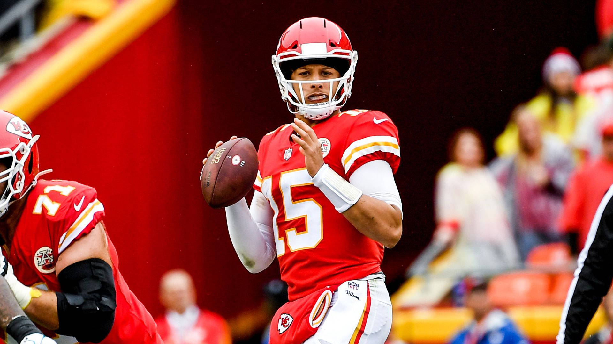
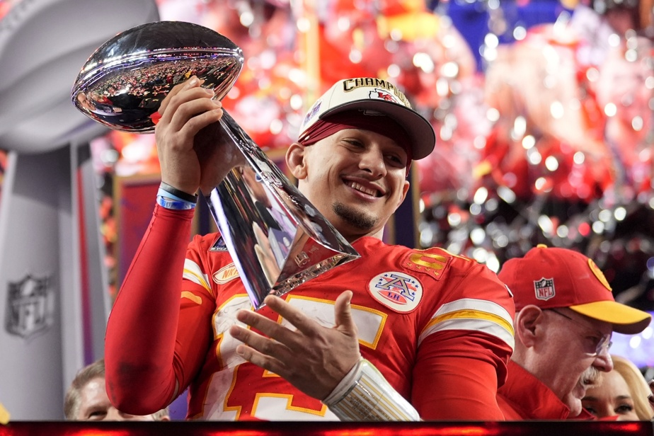
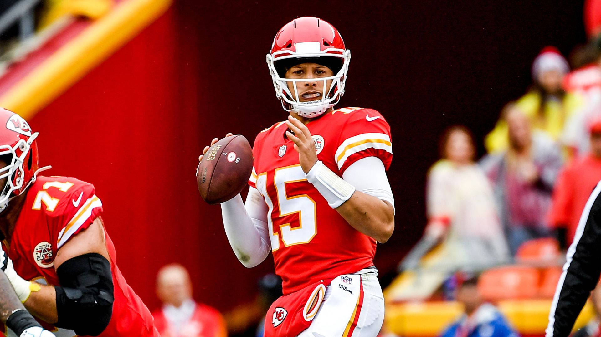
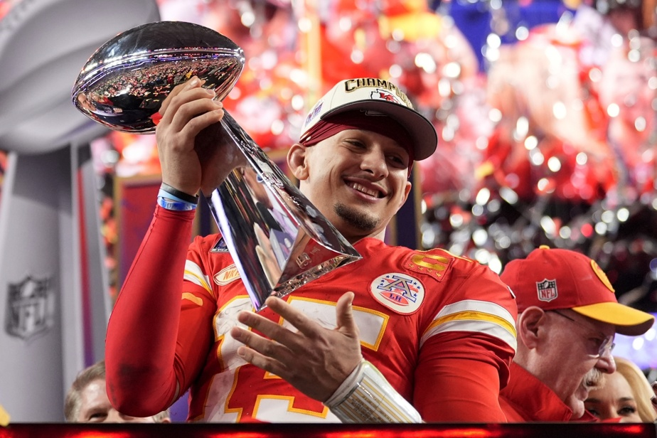
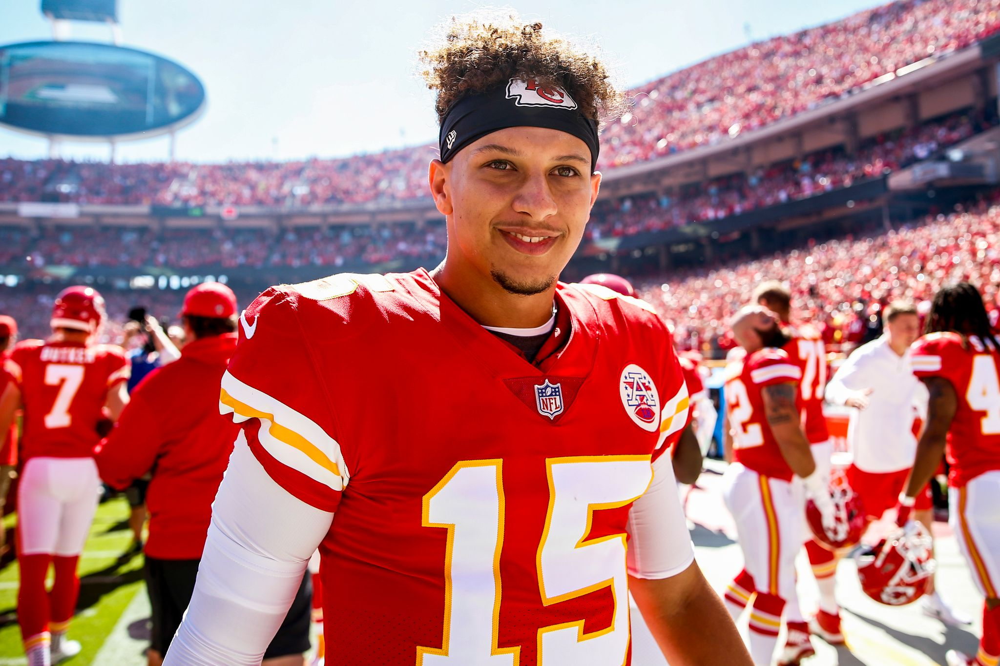
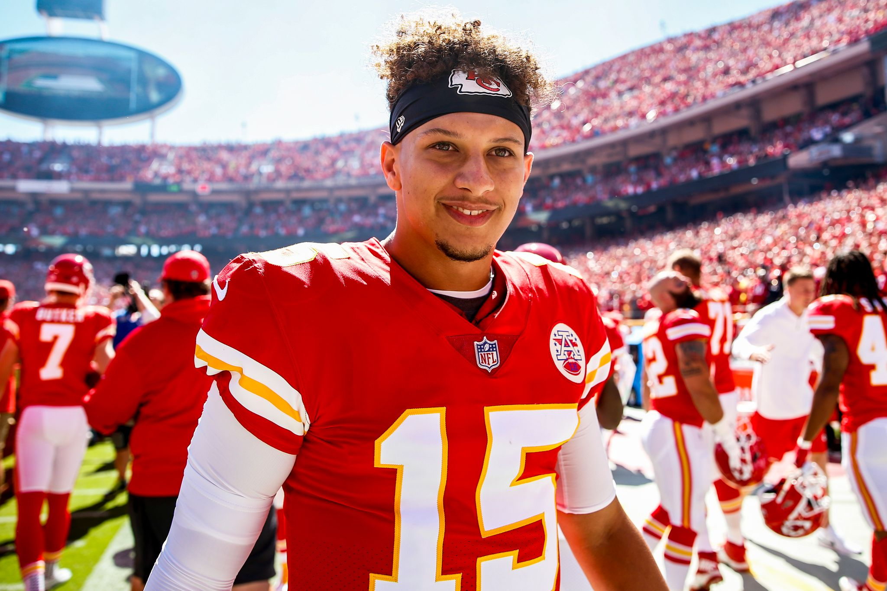

Merci d'avoir regarder mon site fans sur Patrick Mahomes
Plongez dans l'intensité et la passion du Football Américain
En octobre 2024, Patrick Mahomes continue de dominer l'actualité du football américain avec ses performances exceptionnelles. Le quarterback des Kansas City Chiefs a mené son équipe à une victoire éclatante lors du Super Bowl LVIII, marquant ainsi son troisième titre en cinq ans. Ce succès renforce la position de Mahomes comme l’un des meilleurs joueurs de l’histoire de la NFL, et alimente les comparaisons avec la légende Tom Brady, qui détient sept titres
Lors de ce Super Bowl, les Chiefs ont battu les 49ers de San Francisco 25-22 après une prolongation palpitante, où Mahomes a encore une fois montré son sang-froid en menant une série décisive pour un touchdown de Mecole Hardman. Avec cette performance, il a été nommé MVP pour la troisième fois, confirmant ainsi son statut d'icône du sport
En dehors de ses exploits sur le terrain, Mahomes s’est également exprimé sur la dynamique de son équipe, insistant que le travail n'est pas terminé et qu'ils visent un troisième titre consécutif, un exploit qui n’a pas été réalisé depuis les Patriots de Brady en 2004.De plus, Mahomes a poursuivi un excellent début de saison régulière en 2024, avec les Chiefs restant invaincus en octobre, démontrant une fois de plus sa capacité à mener des retours spectaculaires et des performances décisives dans les moments critiques
 




 

Super Bowl LIV (2020) : Première victoire des Chiefs en 50 ans, avec Mahomes nommé MVP après une remontée impressionnante face aux 49ers. Super Bowl LVII (2023) : Deuxième titre pour Mahomes et les Chiefs, battant les Eagles. Mahomes a également été nommé MVP de ce match. Super Bowl LVIII (2024) : Mahomes a remporté un troisième titre de Super Bowl, faisant des Chiefs une dynastie contemporaine. Sa performance a encore une fois été saluée, même si cette fois, il n’a pas reçu le titre de MVP du match.
MVP de la NFL en 2018 : Lors de sa première saison complète en tant que titulaire, Mahomes a marqué l’histoire en lançant pour plus de 5 000 yards et 50 touchdowns, devenant l’un des rares à réaliser cet exploit. MVP de la NFL en 2022 : Avec une saison dominée par ses statistiques et ses performances de haut niveau, il a été à nouveau désigné comme le joueur le plus utile de la ligue. Avec cette troisième victoire en Super Bowl en 2024, Patrick Mahomes continue d’inscrire son nom parmi les plus grands quarterbacks de l’histoire de la NFL. Il confirme ainsi sa capacité à jouer et à exceller au plus haut niveau, encore et encore.
Premier joueur à lancer 5 000 yards dans deux ligues : Mahomes est devenu le premier joueur à lancer pour plus de 5 000 yards en une saison à la fois en NFL et dans son parcours universitaire (Texas Tech). Rapide à atteindre les milestones : Il est devenu le plus jeune quarterback à atteindre certains jalons importants : 10 000 yards en carrière (plus rapide que tout autre joueur). 200 touchdowns en carrière, atteints plus rapidement que tout autre quarterback dans l’histoire de la NFL. 5 000 yards et 50 touchdowns en une saison : Seuls Mahomes et Peyton Manning ont atteint cette combinaison statistique dans une saison.
En 2020, Mahomes a signé un contrat record de 500 millions de dollars sur 10 ans, le plus gros contrat de l’histoire du sport à ce moment-là. En 2023, il a restructuré ce contrat pour recevoir une augmentation sur les trois années suivantes, reflétant son rôle crucial dans l'équipe.
Patrick Mahomes a connu une année très dynamique en 2023 avec des moments marquants en saison régulière, en playoffs et en Super Bowl, ainsi que des statistiques significatives en 2024. Voici un aperçu de ses performances récentes et événements à venir :
Saison régulière 2023-2024 : Mahomes a terminé la saison 2023 avec des statistiques solides, totalisant 4,183 yards, 27 touchdowns et 14 interceptions, avec un taux de complétion de 67.2 % en 16 matchs. En 2024, il a commencé la saison avec six matchs joués, accumulant 1,389 yards, six touchdowns, et un pourcentage de complétion amélioré à 67.9 % malgré un début plus modeste en termes de touchdown.
Super Bowl LVIII : Le moment phare de sa saison passée a été la victoire en Super Bowl LVIII contre les 49ers, où Mahomes a été nommé MVP. Dans ce match intense, il a mené plusieurs drives cruciaux pour décrocher la victoire en prolongation, consolidant sa place parmi les grands du football américain.
Événements et matchs à venir : Pour la suite de la saison 2024, Mahomes et les Chiefs affronteront des équipes clés comme les Eagles, les Bengals et les Raiders. Les attentes sont élevées pour qu'il continue à élever le niveau de jeu de l'équipe et potentiellement les mène à un autre Super Bowl.
En parallèle de sa carrière sur le terrain, Mahomes a également gagné en popularité dans les médias et le marketing sportif, devenant l'un des visages les plus reconnus de la NFL aujourd'hui. Sa carrière reste à suivre de près cette saison !